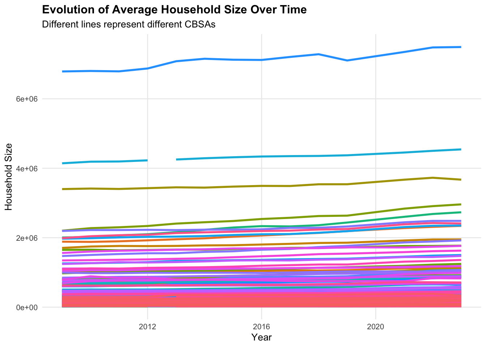

Housing is one of the most hotly debated topics in the US if not the world at this point. Whether if its conversation about your city having better restaurants/nightlife or the cleanliness of that city.People even argue that weather is what makes a metropolitan area better than another. Housing has a spectrum of interest that includes everyone. However, all of those things are subjective, to observe a quantitative trend on what city’s are truly thriving and what makes them the “best”, sometimes we look to affordability/availability.
In this project we specifically look at what makes a city “YIMBY”-Yes in my backyard. This is the opposite of “NIMBY” which refers to a movement of people who do not approve of the increase of housing due to the negative effect on their property values.
Simple economics tells us that as supply increases demand decreases. But housing is more complex than those simple models. As cities increase their size are they running into a wall of growth? Are cities that are “YIMBY” better to live in financially?
Task 1-Data initilization
Show code
if(!dir.exists(file.path("data", "mp02"))){dir.create(file.path("data", "mp02"), showWarnings=FALSE, recursive=TRUE)}library <-function(pkg){## Mask base::library() to automatically install packages if needed## Masking is important here so downlit picks up packages and links## to documentation pkg <-as.character(substitute(pkg))options(repos =c(CRAN ="https://cloud.r-project.org"))if(!require(pkg, character.only=TRUE, quietly=TRUE)) install.packages(pkg)stopifnot(require(pkg, character.only=TRUE, quietly=TRUE))}library(tidyverse)library(glue)library(readxl)library(tidycensus)library(DT)get_acs_all_years <-function(variable, geography="cbsa",start_year=2009, end_year=2023){ fname <-glue("{variable}_{geography}_{start_year}_{end_year}.csv") fname <-file.path("data", "mp02", fname)if(!file.exists(fname)){ YEARS <-seq(start_year, end_year) YEARS <- YEARS[YEARS !=2020] # Drop 2020 - No survey (covid) ALL_DATA <-map(YEARS, function(yy){ tidycensus::get_acs(geography, variable, year=yy, survey="acs1") |>mutate(year=yy) |>select(-moe, -variable) |>rename(!!variable := estimate) }) |>bind_rows()write_csv(ALL_DATA, fname) }read_csv(fname, show_col_types=FALSE)}# Household income (12 month)INCOME <-get_acs_all_years("B19013_001") |>rename(household_income = B19013_001)# Monthly rentRENT <-get_acs_all_years("B25064_001") |>rename(monthly_rent = B25064_001)# Total populationPOPULATION <-get_acs_all_years("B01003_001") |>rename(population = B01003_001)# Total number of householdsHOUSEHOLDS <-get_acs_all_years("B11001_001") |>rename(households = B11001_001)
After importing this data, it makes sense to combine the tables to have a single easy to use data set.
datatable(houston_table,options =list(pageLength =5, searching =FALSE, info =FALSE))
We see that the Houston metropolitan area allowed the most housing permits at 482,075 new units.
2) In what year did Albuquerque, NM (CBSA Number 10740) permit the most new housing units?
To answer this question it seems combining all the different data sources will be the best bet. The code below shows the thought process and steps to complete this task.
As we can see, in 2021 Albuquerque permitted the most housing with 4021.
3)Which state (not CBSA) had the highest average individual income in 2015?
Show code for CBSA import
Alldata<-Alldata %>%rename("CBSA"="FIPS")Highest_AVGincome<-INCOME %>%left_join(HOUSEHOLDS,by=c("NAME","GEOID","year")) %>%mutate(code_for_state =str_extract(NAME, ", (.{2})", group=1)) %>%mutate("Total income/CBSA"=households*household_income) %>%filter(year==2015) %>%group_by(code_for_state) %>%summarise(Total_Income_of_State=sum(`Total income/CBSA`),Total_Population_of_State=sum(households) ) %>%rename(c("Total Income of State"=Total_Income_of_State,"Total Population of State"=Total_Population_of_State)) %>%mutate(AVG_Income=`Total Income of State`/`Total Population of State`) %>%rename(c("state"=code_for_state,"Average Income"=AVG_Income)) %>%slice_max(`Average Income`,n=2)datatable(Highest_AVGincome,options =list(pageLength =5, searching =FALSE, info =FALSE))
Interestingly we can see that Washington D.C has the highest income of any State/Federal District in 2015. However, since DC is not technically a state the STATE with the highest average income is Alaska.
4) Data scientists and business analysts are recorded under NAICS code 5182. What is the last year in which the NYC CBSA had the most data scientists in the country?
We see that the last time New York was the leader in data science employment was 2015. Since 2016 San Francisco has taken that crown from New York except in 2021,Atlanta was the top employer, most likely due to the COVID-19 shutdown.
5) What fraction of total wages in the NYC CBSA was earned by people employed in the finance and insurance industries (NAICS code 52)? In what year did this fraction peak?
From the last question we can see that NYC’s CBSA code is 3562. Using this code and the NAICS code we can find the fraction of people employed by finance by year.
Show code for CBSA import
NY_fract<-Alldata %>%filter(CBSA=="C3562") %>%group_by(YEAR) %>%mutate(Total_NYC_Wages=sum(TOTAL_WAGES))NY_fract_clean<-NY_fract %>%filter(INDUSTRY==52) %>%mutate(percent_FIN_INS=Total_NYC_Wages/TOTAL_WAGES)max_percent <- NY_fract_clean %>%ungroup() %>%slice_max(order_by = percent_FIN_INS, n =1)datatable(max_percent,options =list(pageLength =5, searching =FALSE, info =FALSE))
Show code
datatable(NY_fract_clean,options =list(pageLength =10, searching =FALSE, info =FALSE))
Show code
ggplot(data=NY_fract_clean,mapping=aes(YEAR,percent_FIN_INS,))+geom_point()+labs(x="Years",y="Finance and Insurance Percent")+geom_line(color="red")+theme_minimal()
When looking at the outputs we see that the for the most recent year 2023, \(25.88 \%\) of NYC’s wages were made up from the Financial and Insurance industries. This number is lower compared to the max of \(27.26\%\) in 2019. Overall we see that the Finance and Insurance sector are very strong pillars of NYC wages.
Task 3-Initial Visualization
1) The relationship between monthly rent and average household income per CBSA in 2009.
Show code for CBSA import
library(ggplot2)library(scales)
Attaching package: 'scales'
The following object is masked from 'package:purrr':
discard
The following object is masked from 'package:readr':
col_factor
Show code for CBSA import
library(dplyr)# Filter to 2009Rent_vs_Income <- Alldata %>%filter(YEAR ==2009) %>%select(c(CBSA,population,monthly_rent,YEAR,household_income,NAME)) %>%distinct() %>%slice_max(order_by = population, n =20, with_ties =FALSE)
In order to visualize the relationship between the monthly rent and income of households of CBSA’s, it seemed intuitive to use a subset of our population. Thus using the largest metropolitan areas seemed a good place to start.
Show code for CBSA import
monthly_rent_vs_Income_graph <-ggplot(Rent_vs_Income, aes(x = household_income, y = monthly_rent, label = CBSA)) +geom_point(alpha =0.6, color ="lightblue", size =2) +geom_text(vjust =-0.8, size =3, color ="darkblue") +scale_x_continuous(labels = scales::dollar_format()) +scale_y_continuous(labels = scales::dollar_format()) +labs(title ="Relationship Between Monthly Rent and Average Household Income (2009)",x ="Average Household Income (USD)",y ="Average Monthly Rent (USD)" ) +theme_minimal(base_size =10) +theme(plot.title =element_text(face ="bold"),plot.subtitle =element_text(size =12),panel.grid.minor =element_blank() )
# A tibble: 2 × 6
CBSA population monthly_rent YEAR household_income NAME
<chr> <dbl> <dbl> <dbl> <dbl> <chr>
1 C4790 5476241 1303 2009 85168 Washington-Arlington-Ale…
2 C4186 4317853 1303 2009 73825 San Francisco-Oakland-Fr…
Initially we see that there is a cluster effect that happens. Most of the data is clumped together and seems to have linear growth all the way through in terms of rent vs income. We see a slight deviance,when analyzing both the Bay area-San Francisco and Washington DC-DMV area.
These 2 areas compared to the other metropolitan areas make more on average and have higher rents. This reinforces the relationship between income and rent but the way the relationship evolves is a bit extreme.
2) The relationship between total employment and total employment in the health care and social services sector (NAICS 62) across different CBSAs. Design your visualization so that it is possible to see the evolution of this relationship over time.
`summarise()` has grouped output by 'CBSA', 'NAME'. You can override using the
`.groups` argument.
Show code for CBSA import
ggplot(Health_vs_Total, aes(x = Total_Employment, y = Health_Emp, color = YEAR)) +geom_point(alpha =0.7, size =2) +scale_x_continuous(labels = comma) +scale_y_continuous(labels = comma) +scale_color_viridis_c(option ="C") +labs(title ="Relationship Between Total Employment and Health Care Employment Over Time",subtitle ="Color shows year progression; each point represents a CBSA",x ="Total Employment",y ="Health Care & Social Assistance Employment",color ="Year" ) +theme_minimal(base_size =14) +theme(plot.title =element_text(face ="bold"),legend.position ="right",panel.grid.minor =element_blank() )
# A tibble: 30 × 5
CBSA NAME YEAR Total_Employment Health_Emp
<chr> <chr> <dbl> <dbl> <dbl>
1 C3562 New York-Newark-Jersey City, NY-NJ-P… 2019 43407668 1610693
2 C3562 New York-Newark-Jersey City, NY-NJ M… 2023 42585716 1756931
3 C3562 New York-Newark-Jersey City, NY-NJ-P… 2022 41728290 1649152
4 C3562 New York-Newark-Jersey City, NY-NJ-P… 2018 41122324 1539689
5 C3562 New York-Newark-Jersey City, NY-NJ-P… 2016 40649858 1425753
6 C3562 New York-Newark-Jersey City, NY-NJ-P… 2017 40438381 1479129
7 C3562 New York-Newark-Jersey City, NY-NJ-P… 2015 40313635 1383736
8 C3562 New York-Newark-Jersey City, NY-NJ-P… 2013 37708250 1314131
9 C3562 New York-Newark-Jersey City, NY-NJ-P… 2021 37567539 1572728
10 C3562 New York-Newark-Jersey City, NY-NJ-P… 2014 36250638 1347073
# ℹ 20 more rows
The following graphic shows the relationship between health care and total employment. The x axis shows the employment totals of a metro area. each dot is a metro area that corresponds to the employment total.
The increasing fashion of the graph also shows a linear trend, that as jobs increase in an area, so too do the needs of healthcare workers. We also see that the points that are outlined towards the right end also belong to very large cities like NYC,LA, and Chicago.
3) The evolution of average household size over time.
household_size_plot<-ggplot(Household_trends, aes(x = YEAR, y = Average_HH_Size, group = CBSA, color = CBSA)) +geom_line(linewidth =1) +labs(title ="Evolution of Average Household Size Over Time",subtitle ="Different lines represent different CBSAs",x ="Year",y ="Household Size",color ="CBSA" ) +theme_minimal(base_size =10) +theme(plot.title =element_text(face ="bold"),panel.grid.minor =element_blank(),legend.position ="none" )household_size_plot

By analyzing this graph we can see how over time households have increased over a ~15 year period. Interestingly we see slight amounts of growth in the largest cities, but we see more substantial growth in cities starting in 2009 with ~2 million household size.
Task 4-Rent Burden
Rents make up a large portion of the expenditures of everyday people. To understand this more in depth analysis is needed to understand metro areas and the true cost to a person living in them.
The first step is to merge the Rent and Income data sets to compute a rent-to-income ratio and establish a baseline year, which serves as a reference point for interpreting rent burden across time and metropolitan areas.
datatable(top5_burden,caption ="Top 5 Metro Areas by Rent Burden Index",options =list(pageLength =5, searching =FALSE, info =FALSE))
Bottom 5 metro areas
datatable(bottom5_burden,caption ="Bottom 5 Metro Areas by Rent Burden Index",options =list(pageLength =5, searching =FALSE, info =FALSE))
We see that based on the rent burden rational developed, we take into account the average rent to income of an area and compare that to the baseline average of the US. Using this across our data set the highest rent burden is felt by the Metro areas in Puerto Rico. This coincides with much lower income despite being in the US.
The smallest rent burden is felt by smaller metro areas, of which most are in the Midwest. Places like Wisconsin especially, who appears on the bottom 10 four times.
Although the rent to income disparity is magnified through Puerto Rico, it is does leave me curious to see which mainland metro areas are rent burden heavy.
Also how have certain Metro Areas such as LA performed over a 10 year span?
# A tibble: 5 × 2
NAME mean_burden_index
<chr> <dbl>
1 Key West, FL Micro Area 150.
2 Miami-Fort Lauderdale-West Palm Beach, FL Metro Area 150.
3 Miami-Fort Lauderdale-Pompano Beach, FL Metro Area 147.
4 Key West-Key Largo, FL Micro Area 146.
5 Clearlake, CA Micro Area 142.
When removing Puerto Rico from our criteria, we see that the South Florida, especially from South Beach to the Keys has shown average rents much higher than the rest of the country.
When analyzing the trend of LA’s rent burden, it is visible that even though rent to income has stayed mostly flat, the rent burden felt by the metro area has fluctuated slightly. Even so, the upward trend for the last 3 years points to LA becoming even more expensive.
Task 5-Housing Growth
By looking at the historical housing permits we can see the amount of growth a region or metro area is growing, and the availability of housing in terms of acceptance of new housing projects.
The first step we took to make a quantifiable relationship was to join the population and permits data by CBSA and year, allowing us to relate housing permits to demographic changes. From there, we calculated five-year population growth within each CBSA and used it to develop two standardized measures—instantaneous growth (permits per capita) and rate-based growth (permits relative to five-year population change) which were then combined into a composite housing-growth score.
Ranking the CBSA by this metric yields us the following results:
We see that industrial cities such as Pittsburgh and Mobile have shown more house growth than other cities on average. Also we see that major metro areas in smaller states also show bias towards not wanting new housing, such as Roanoke and St.Louis.
When looking at the results of our analysis we can see that the most “YIMBY” metro area is a bit subjective. But in terms of population growth and rent burden the model we have out together has the most “YIMBY” metro area as Phoenix AZ. With great growth in terms of population as well as a DECREASE in rent burden, Phoenix is a no brainier.
However based on the statistics calculated we also see that Provo-Orem metro area performs very well. To compare we construct the following graph.
Show code for CBSA import
# Identify likely YIMBY CBSAstop_yimby <- top_pop_gain %>%filter(YIMBY) %>%arrange(rent_change) %>%slice_head(n =8) ggplot( YIMBY_data %>%filter(NAME %in% top_yimby$NAME),aes(x = year, y = rent_burden_index, color = NAME)) +geom_line(size =1.1, alpha =0.8) +geom_point(size =2) +geom_text_repel(data = YIMBY_data %>%filter(NAME %in% top_yimby$NAME) %>%group_by(NAME) %>%filter(year ==max(year)),aes(label = NAME),size =3,nudge_x =0.3,direction ="y",hjust =0 ) +labs(title ="Rent Burden Over Time in Top 'YIMBY' CBSAs",subtitle ="Metros showing falling rent burden, population growth, and strong housing growth",x ="Year",y ="Rent Burden Index (0–100)",color ="CBSA" ) +theme_minimal(base_size =13) +theme(legend.position ="none",plot.title =element_text(face ="bold") )
The following graph shows 2 high growth areas with relatively beneficial rents projections in comparison to the rest of the US. In the end, the most YIMBY city still remains a bit subjective between the size of the metro area, such as Phoenix metro, or cost of rent in Provo-Orem Metro.
Task 7) Policy Brief
Federal YIMBY Partnership Act
Goal:
Help cities build enough homes so families can afford to live where they work.
Why It Matters:
Phoenix shows that when local governments make it easier to build, rents stabilize, jobs grow, and neighborhoods thrive. San Francisco shows the opposite—tight zoning, slow approvals, and high costs drive people away. Federal incentives can tip the balance toward more “Yes In My Back Yard” progress nationwide.
Co-Sponsor: Rep. Nancy Pelosi (CA-11, San Francisco) — represents a city struggling under NIMBY barriers that federal help could fix.
Who Benefits:
Construction Workers & Trade Unions: More projects mean steady, high-skill jobs rebuilding the middle class.
Teachers & Firefighters: Lower rents keep essential workers living in the communities they serve.
How It Works:
The Act rewards cities that:
Streamline permits and zoning for multifamily housing,
Demonstrate real increases in new housing units, and
Reduce rent burdens for working families.
Metrics to Track Success:
Rent Burden Index — Share of income spent on rent (lower = better).
Housing Growth Score — Combined measure of new housing permits and population growth (higher = better).
Bottom Line:
Rome wasn’t built overnight but the first steps were , but Phoenix proves YIMBY policies deliver results. Let’s scale that success nationally so every worker can afford a home near their job!